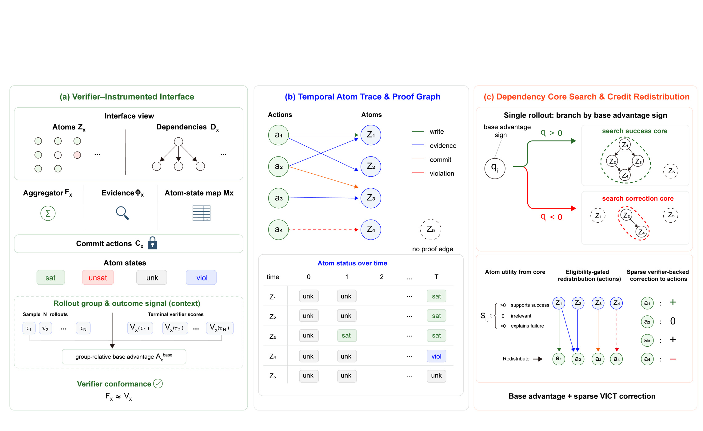
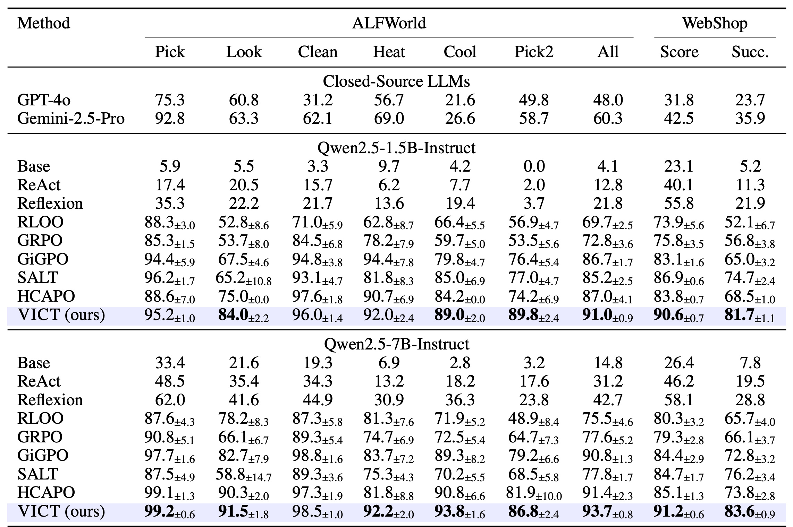
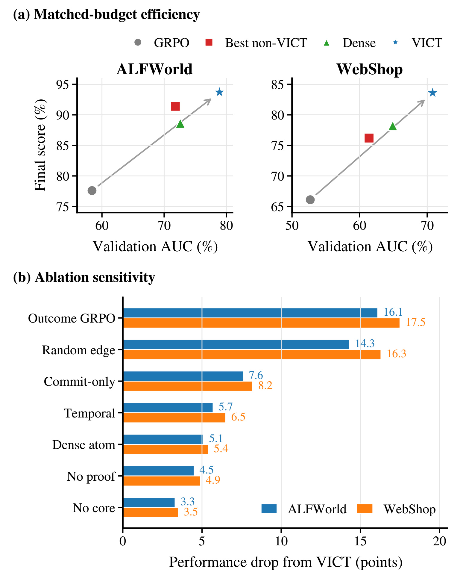
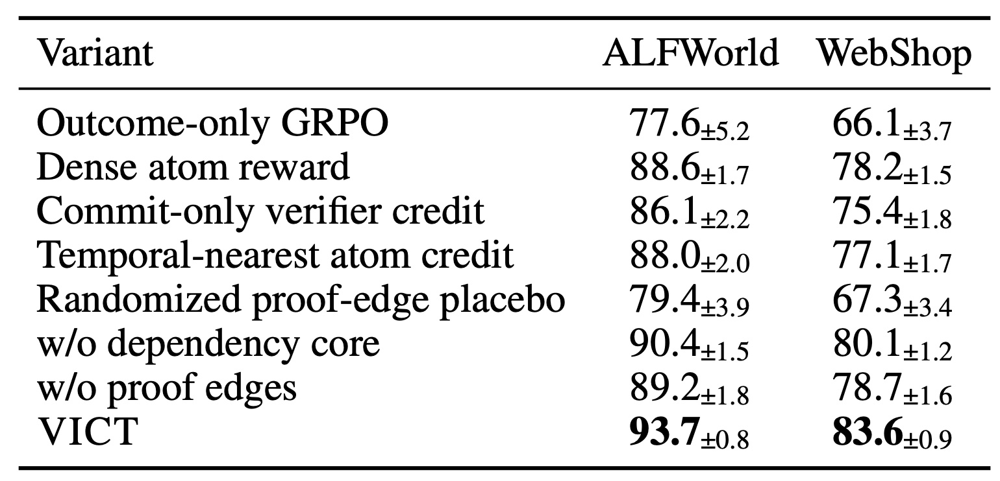
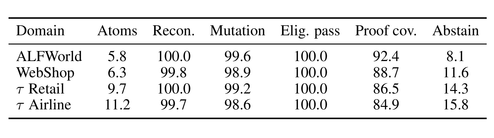
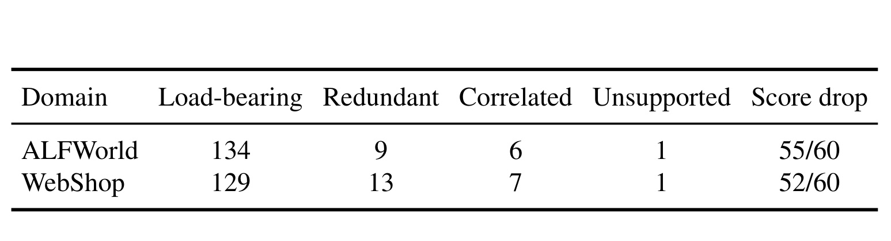
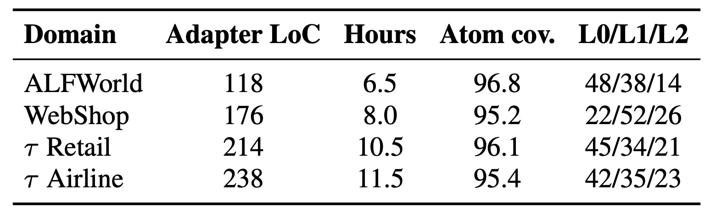
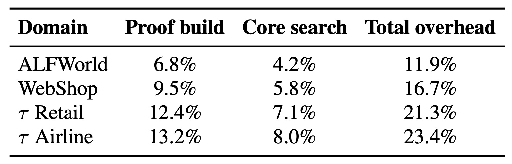

VICT：面向长程大模型智能体强化学习的验证器插桩信用追踪
[toc]
VICT 由清华大学李鹏程等人提出，合作机构包括西安交通大学与嘉兴南湖学院。论文入口为 arXiv:2608.28128，作者在 arXiv 备注中标注其已被 EMNLP 2026 接收。本轮未核验到独立的 VICT 官方代码仓库。这项工作不再从轨迹相似度、回看判断或额外分支采样中猜测动作重要性，而是把原本只输出一个终局分数的程序化验证器改造为可审计的训练接口。
长时程 LLM Agent 的终局奖励会把同一成败结果广播给整条轨迹，掩盖究竟哪些动作完成了必要条件、哪个最终操作造成失败；而现有精细信用方法多从 rollout 侧重建信号，仍把真正判定成败的程序化验证器压成一个标量。
1. 背景和问题
大模型从单轮回答走向多轮工具使用后，一个任务的成败往往由数十个观察和动作共同决定。ALFWorld 需要找到正确物体、完成加热或清洁、再放到指定容器；WebShop 需要搜索商品、核对品类与硬属性、选择颜色和尺寸，最后才能购买；客服 agent 还必须在写数据库前获得用户确认。这些环境虽然可以用程序化规则在终局严格判分，但常见的 GRPO 或 RLOO 训练会把组内归一化后的轨迹优势广播给所有动作。于是，失败轨迹中“找到正确物体”和“放错容器”可能一起被惩罚，成功轨迹中无效绕路又会与关键状态写入获得同号信号。
近年细粒度 agent RL 通常从 rollout 侧解决问题：GiGPO 利用重复状态构造动作比较，SALT 使用轨迹图区分共享和分叉步骤，ProxMO 依据语义近邻，HCAPO 用回看推理估计动作效用，分支方法则从共享前缀采样更多续轨。它们都能缓解统一广播，但也各自带着条件：状态或轨迹相似不一定保留验证器关心的历史，回看和过程反馈需要辅助判断，分支采样则用更多 rollout 换局部比较。共同的盲点是，那个真正判定任务的规则仍然被隐藏在一个最终数值后面。
VICT 的关键观察是：很多可验证 agent 任务的 verifier 已经在检查目标物体、硬属性、价格预算、用户确认、禁止写入和最终提交等具体事实。与其从一个标量反推原因，不如直接把这些检查暴露为可执行或有证据支持的原子，再用日志中的状态变化、证据显露和 commit 动作将原子连回轨迹。这个视角把问题从“如何发明中间奖励”改成“如何安全暴露已有验证器的内部结构”。
这里必须先收紧论文的主张边界。proof edge 只证明某个动作有资格承接某个验证器原子的信用，不证明这个动作在因果上必要、充分或最优。接口也不会自动拆解任意黑盒 LLM judge；它要求原子可执行或可由观测证据支撑，要求原子聚合能重建原验证器，证据不完整或依赖含糊时宁可弃权。因此，VICT 的价值不是让训练信号处处非零，而是让每个新增的非零修正都有可回放的验证器证据。
从信用分配的角度看，VICT 同时拆开了三个容易混在一起的问题。第一个是“终局分数方向是什么”，仍由原始 group advantage 决定，因此原目标没有被中间原子替换。第二个是“哪些验证器事实足以解释这个方向”，通过依赖闭包的成功核或修复核回答。第三个是“这些事实能合法地分给哪些动作”，由 write、reveal、commit 和 violation witness 给出。如果第二步只看所有已满足原子，就会退化成稠密原子奖励；如果第三步只看时间距离，就会把最近的无关动作当成原因。后面的消融正是对这两种退化的直接检验。
与传统 reward shaping 相比，这项工作不企图定义一个每步都增长的势函数。某个搜索动作可能显露了目标商品不满足材质条件，这个证据对后续放弃购买是有用的，却不代表当前轨迹更接近终局成功。VICT 允许“有用证据”、“状态写入”和“最终提交”承担不同信用角色，又使它们都受终局核方向约束。这也解释了为什么论文反复强调“优势重分配”而不是“中间奖励”：原子不单独定义任务目标，它们只为原结果中可核验的部分提供位置信息。
这种问题设定对业务 agent 格外相关。一个成熟操作系统往往已经有不可超预算、不可未确认写库、不可改动无关字段、最终回复必须与数据库一致等规则。若训练层只看最后成功与否，就会放弃规则已经提供的定位能力；若直接把每个通过的检查当成奖励，又会鼓励 agent 反复完成容易原子而不做关键 commit。VICT 要在这两个极端之间建立稀疏且可审计的中间层，因而后续方法的所有复杂性都服务于两个原则：不改终局锚点，不给无证据动作新信用。
2. 方法
2.1 验证器插桩接口：从终局分数恢复结构
对任务实例 $x$，原验证器 $V_x$ 只输出轨迹的终局得分。VICT 将它显式化为六类工件：原子集 $Z_x$、把终局原子指派映射成得分的聚合器 $F_x$、编码有效组合的依赖 $D_x$、将原子绑定到状态或证据变量的 $M_x$、从日志中抽取观测证据的 $\Phi_x$，以及识别购买、放置、API 更新等最终化动作的 $C_x$。每个原子在时刻 $t$ 的状态属于 $\{\mathrm{sat},\mathrm{unsat},\mathrm{unk},\mathrm{viol}\}$，分别表示满足、未满足、不可评估和已违反。这个四值设计很重要：尚未看到商品材质时是“未知”，不能被偷换为“不满足”；只有提交了不符合要求的商品，才是可定位的违反。接口不能凭声明宣称忠实，而要经过原轨迹与验证器相关变异集 $S_x$ 的一致性测试：
符号解释：$\bar z(\tilde{\tau})$ 是变异轨迹的终局原子指派，$F_x$ 是插桩后聚合器，$V_x$ 是原验证器，$\epsilon_x^{\mathrm{conf}}$ 是最坏重建误差。布尔验证器使用 $\eta_x=0$；分级分数则在训练前固定容差。如果只有一类原子失配，遮罩该家族；如果聚合器整体失配，当前任务的所有 VICT 修正归零。所以这不是把人工写的 rubric 当真相，而是要求插桩接口在实际可变条件下重现原判分器。

Figure 2 从左到右对应三个真实阶段。左侧不是把自然语言子目标塞进 prompt，而是在策略上下文外将 verifier 暴露为原子、依赖、证据抽取器和 commit 谓词，再用 rollout group 与验证器输出做一致性门控。中间将时间上的动作与原子状态连成 proof graph；“写入”、“显露”、“最终化”和“违反”是不同关系，没有可靠边的终局原子保持无支持状态。右侧先依据 base advantage 的正负方向搜成功核或修复核，再把原子效用只分给有证据边的动作。图中零信用的节点不是遗漏，而是“证据不足就不猜”的产物。整条链路只在训练时生成 advantage correction，推理时的策略输入和行为不变。
2.2 证据图与依赖核：先决定信用能去哪里
对通过 conformance 的轨迹，VICT 根据日志构造动作到原子的证据图。两个基础 witness 定义为如下，它们把状态写入与最终提交分开记录，避免仅因时间相邻就把无关动作误判为原子的成因：
符号解释：$M_x(z_j)$ 给出原子 $j$ 所依赖的状态或证据变量，$\Delta_{i,t}(v)=1$ 表示动作 $a_{i,t}$ 前后的抽取证据发生变化，$C_x$ 是 commit 动作集，$\mathrm{scope}_x$ 列出该 commit 最终化的原子。证据显露与违反边沿用同样的日志模式定义。这意味着“点击购买”可以与 purchase atom 直接连接，“打开商品页”则只在新属性变得可见时获得 reveal 边；单纯在已看过的页面之间循环不会被塑造成进度。证据图只解决“信用能到哪里”，还没解决“哪些原子真正影响得分”。VICT 先使用底层优化器已有的 group advantage 符号：
符号解释：$A_i^{\mathrm{base}}$ 是原 GRPO/RLOO 的轨迹级优势，$\epsilon_q$ 是预先固定的平局带，$q_i=+1$ 搜索删除后会降低分数的成功核，$q_i=-1$ 搜索修复后会提高分数的纠错核，$q_i=0$ 直接弃权。这样方向判定不需要另外的中位数成败启发式。候选原子集 $C$ 的验证器位移为：
符号解释：$\bar z_i$ 是轨迹的终局原子指派，$\mathrm{cf}^{q_i}_{D_x}$ 按 $q_i$ 方向且在依赖 $D_x$ 下编辑原子，$\Delta_x(C)$ 衡量该反事实能否把得分朝预期方向推动。这些反事实只编辑 verifier assignment，不重新与环境交互；依赖投影有歧义，或位移落在 $2\eta_x$ 一致性不确定带内时，修正归零。核 $C_i^*$ 由预算贪心搜索构造：
符号解释：$\mathrm{cl}_{D_x}$ 是依赖规则的最小不动点闭包，$j_\ell$ 是第 $\ell$ 步带来最大 verifier displacement 的原子，搜索在位移达到 $\rho_i$ 或预算 $B$ 耗尽时停止，之后逆向删除不影响闭包和阈值的冗余原子。论文不声称贪心解具有全局近似比；它的目标是在小原子集中获得可审计的局部极小核。在每域 2,000 条符号有支持的 rollout 上，当预算内存在有效核时，贪心搜索在 91.8%-97.6% 的情况下返回最小基数核，最终有资格的动作集与穷举最小参考在 96.2%-98.8% 的 rollout 上一致。
2.3 证据边约束的优势修正：再决定给多少
核搜索为每个核原子生成 leave-one-out 边际 $\delta_{i,j}$，随后只在当前同任务 rollout group 内归一化，不混入历史轨迹。这一局部化约束使不同任务的原子分数尺度不会相互污染，也便于从同一批轨迹重放每个修正。对动作 $t$ 的 verifier 修正为：
符号解释：$\hat\delta_{i,j}$ 是组内稳健归一化的核边际，$\omega_{i,t,j}=\sum_r\beta_r$ 累加动作-原子之间的固定非负 witness 权重，$Z_{i,j}$ 是原子 $j$ 的总 witness 权重与平滑项。直接 write/commit/violation 默认权重为 1，evidence path 的总权重在支持路径上均分。分母防止一个原子因连边多而重复注入过量信用。该定义导出最重要的资格不变量：
符号解释：$\mathrm{Gate}_{i,t,j,r}=1$ 同时要求接口通过 conformance，$j\in C_i^*$，$(t,j,r)$ 是观测到的 proof edge，原子边际非零，且 proof record 满足 $D_x$ 的依赖约束。这个命题是实现级安全条件：表 3 中 100% 的 eligibility pass 并不是方法效果完美，而是因为违反条件的修正本就不应被发出。最终优势保留终局结果锚点：
符号解释：$A_i^{\mathrm{base}}$ 是原优化器的终局优势，$A^{\mathrm{VICT}}_{i,t}$ 是稀疏验证器修正，$c$ 剪裁单个动作的修正幅度，$\lambda$ 校准两种优势的数值尺度。因此 VICT 既没把原 terminal reward 改成稠密奖励，也没用验证器信号完全替换轨迹成败方向。归一化使用稳健中心与尺度：
符号解释：$\mathrm{med}_{x,j}$ 和 $s_{x,j}$ 来自当前同任务 group 中有支持的原子边际，$\epsilon$ 是数值平滑项。若支持某原子的 rollout 少于两条，或稳健尺度为零，该原子的归一化边际设为零。这与一致性失败、近平局、核搜索失败、不确定带和缺少 proof support 一起构成弃权机制。修正尺度与剪裁上限也由 base advantage 校准：
符号解释：$\gamma_\lambda$ 默认为 0.5，用两种优势绝对值中位数之比设置 $\lambda$；$q_{0.95}$ 是 base advantage 绝对值的 95% 分位数。这种校准避免验证器修正因分数范围不同而压过原目标，却不等于 potential-based shaping 的策略不变性保证。它仍会通过 $\lambda$、clip、贪心核、依赖设计和 proof coverage 向随机梯度引入有方向的偏差。论文的经验问题是，这种可审计偏差在相同 rollout 预算下是否优于统一广播和轨迹侧启发式。
3. 实验结果
3.1 设置、对比对象与证据边界
主实验是 ALFWorld 和 WebShop。前者报告 Pick、Look、Clean、Heat、Cool、Pick2 六类任务的成功率及平均值，后者报告规范化 score 与更严格的完全成功率。比较包括闭源模型、Qwen2.5-Instruct 直接提示、ReAct、Reflexion、RLOO/GRPO，以及 GiGPO、SALT、HCAPO 三种细粒度信用基线。VICT 使用 Qwen2.5-1.5B/7B-Instruct，group size 为 8，学习率 $10^{-6}$，KL 系数 0.01，ALFWorld/WebShop 最多 50/15 个环境步。每次更新采样 16 个 task group，即 128 条 rollout，共训练 300 次更新，每个种子约 38.4k 条训练 rollout，VICT 结果报告三个随机种子的均值和标准差。
tau-bench Retail/Airline 只是补充验证：它使用 Qwen3-8B、模拟用户和 Fission-GRPO 协议，与主实验的骨干与流程不同。VICT 在 Retail/Airline 上为 $56.6\pm0.8$/$45.1\pm1.0$ Pass@1，Fission-GRPO 为 51.3/40.0；这支持“确认、禁止写入和 API commit 也可被追踪”，但不能与 ALFWorld/WebShop 的提升做直接定量比较。
3.2 主结果：改善集中在延迟事实和最终提交

Table 1 需分骨干读。在 Qwen2.5-1.5B 上，VICT 的 ALFWorld 平均成功率为 $91.0\pm0.9$，相比 GRPO 的 $72.8\pm3.6$ 提高 18.2 个点；WebShop 严格成功率为 $81.7\pm1.1$，相比 $56.8\pm3.8$ 提高 24.9 个点。在 Qwen2.5-7B 上，VICT 达到 $93.7\pm0.8$ 的 ALFWorld 平均成功率和 $83.6\pm0.9$ 的 WebShop 严格成功率，相比 GRPO 分别提高 16.1 和 17.5 个点。标准差较小，因此这不是单一种子的偶然峰值。但表格比较的是各方法在论文设定中的结果，并非所有基线都共享完全相同的实现成熟度。
更关键的是提升出现在哪些任务上。7B 时 Pick、Clean 已接近饱和，VICT 为 99.2 和 98.5；差距主要来自 Look、Cool 和 Pick2，VICT 为 91.5、93.8 和 86.8，GRPO 为 66.1、72.5 和 64.7。这几类任务的共同点是，观测证据、变换状态或第二个物体容易被后续操作覆盖。WebShop 又对一个错误硬属性或过早购买极其敏感，因此把“揭示正确证据”与“提交错误商品”分开更容易体现为严格成功率增益。这个任务分布与 VICT 的机理一致，比只看平均数更有解释力。
与 rollout-side 方法组合时，GiGPO+VICT 在 ALFWorld/WebShop 达到 94.6/84.7，高于 GiGPO 的 90.8/72.8；HCAPO+VICT 在 ALFWorld 为 94.3，SALT+VICT 在 WebShop 为 85.2。这说明 verifier-side 与 rollout-side 信号可能互补，但作者明确将这些视为描述性结果；组合仅适用于能分别暴露动作对齐优势和独立轨迹结果成分的方法，尚不能推广到任意奖励塑造器。
3.3 样本效率与消融：不是稠密原子奖励或时序近邻

Figure 3(a) 把 300 次更新后的最终得分与整段训练的规范化验证 AUC 放在一起。ALFWorld 上 GRPO、最强非 VICT 基线 HCAPO、稠密原子奖励、VICT 的 AUC 分别为 58.4、71.8、72.6、78.9，最终得分分别为 77.6、91.4、88.6、93.7。WebShop 上对应 AUC 为 52.7、61.4、64.9、70.8，最终得分为 66.1、76.2、78.2、83.6。VICT 不只在训练末尾获得一个更好 checkpoint，而是在匹配更新预算下累积了更大的验证曲线面积。不过 AUC 仍是训练内指标，不能替代新任务、新 verifier 或更长 horizon 上的外推评估。
Figure 3(b) 的横轴是相对完整 VICT 的性能降幅，而不是对于 GRPO 的提升。换回 outcome-only GRPO 时 ALFWorld/WebShop 降低 16.1/17.5 点，随机打乱 proof edge 降低 14.3/16.3 点，说明“稀疏”本身不够，边必须连到正确动作。commit-only 下降 7.6/8.2，temporal-nearest 下降 5.7/6.5，表明只罚最终动作或按时间距离就近分配不足以复现完整方法。dense atom、no proof、no core 仍分别有 5.1/5.4、4.5/4.9、3.3/3.5 点下降，因此实验支持的是“依赖核 + 可观测证据边 + 弃权/组归一化”的联合条件。

Table 6 给出了图 3(b) 背后的均值与标准差。稠密原子奖励在 ALFWorld/WebShop 上为 $88.6\pm1.7$/$78.2\pm1.5$，明显强于 outcome-only，说明 verifier 中间事实本身确实有信息；但它仍低于 VICT 的 $93.7\pm0.8$/$83.6\pm0.9$，因而不能把所有已满足原子直接当作进度奖励。去掉 dependency core 后是 90.4/80.1，去掉 proof edge 后是 89.2/78.7，两者的降幅小于随机边，但在两个域都方向一致。这些变体重用同一套适配器、原子和证据抽取器，只改信用规则，因而比跨方法主表更接近一个机制测试。不过论文也诚实说明，这只能排除若干简单替代解释，不能证明 VICT 不属于一种有偏的 return redistribution。
3.4 接口可信性：一致性、覆盖与资格边

Table 3 要避免两种误读。第一，重建与变异一致性不是策略性能，而是插桩接口的入场门槛。ALFWorld、WebShop、tau Retail、tau Airline 的重建一致性为 100.0、99.8、100.0、99.7，变异一致性为 99.6、98.9、99.2、98.6，表明聚合原子大体能重现原 verifier，但不是绝对无误差。第二，eligibility pass 的 100% 是 Eq. 8 的实现不变量，低于 100% 意味着系统产生了本不应发出的修正，而不是一个可接受的精度-覆盖折中。
更有信息的是 proof coverage 和 abstention。四域的覆盖率从 84.9% 到 92.4%，弃权率从 8.1% 到 15.8%：ALFWorld 的主要弃权原因是只在终局可知且找不到可靠 writer 的事实，WebShop 是商品证据歧义，Retail 是缺少确认 witness，Airline 是未解决的策略前置条件。最终训练 rollout 中，有至少一个非零修正的轨迹占 49.5%-61.8%，真正非零的动作只占 11.7%-18.6%，平均每轨迹约 2.2-4.7 个动作。所以 VICT 并没有把稀疏终局奖励转成遍布轨迹的稠密进度分，而是在稀疏上加了可证据化的结构。

Table 14 是对“有 proof edge 就真的是关键动作吗”的补充回答。两名标注者分别审查了 ALFWorld 和 WebShop 最后一轮的 150 条获信用边，一致性 $\kappa=0.81$。其中 ALFWorld 有 134 条 load-bearing、9 条冗余、6 条相关、1 条无支持；WebShop 分别为 129、13、7、1。在另外的固定续轨介入中，把 60 个获信用动作逐个换为 no-op，ALFWorld 有 55/60、WebShop 有 52/60 出现终局 verifier 分数下降。这些数据说明大多数 proof edge 对当前 verifier 得分确实承重，也承认存在冗余与相关支持。固定续轨会包含下游失效的间接影响，且随机模拟用户的 tau-bench 无法确定性重放，所以它仍然只是 verifier-score sensitivity，不是一般因果证明。
3.5 插桩与运行成本，以及错误 commit 案例

Table 10 把“现有 verifier 已有结构”与“结构可零成本用于训练”分开。ALFWorld 适配器为 118 LoC、6.5 小时，原子覆盖 96.8%；WebShop 为 176 LoC、8.0 小时、95.2%；tau Retail/Airline 为 214/238 LoC、10.5/11.5 小时、96.1%/95.4%。L0 只从状态差分建原子，L1 要插桩分支、断言、策略检查或分数项，L2 需小型确定性适配器暴露半结构化证据。WebShop 的 L1/L2 占 52%/26%，说明商品证据和购买 commit 并不只靠一个简单 state diff 就能处理。新 verifier 版本还可能使这些适配器失效，因此 LoC、人时、原子覆盖与层级组成应成为部署审计项，而不是被性能表隐去。

Table 11 显示主实验的代价还没有大到改变 rollout 数量，但已不可忽略。ALFWorld 的 proof build/core search 分别增加 6.8%/4.2%，总开销 11.9%；WebShop 为 9.5%/5.8%，总开销 16.7%。tau Retail/Airline 的总开销上升到 21.3%/23.4%，与它们更多的原子、数据库记录和策略前置条件一致。默认 core budget $B=8$ 是为表 3 中平均 5.8-11.2 个原子的小集合设计的；若业务 verifier 拆出上百原子，必须补充 core-size 分布、预算敏感性和弃权率，不能把当前成本直线外推。更关键的是，这些比例只覆盖训练时的附加计算，不包括前期建立原子映射、依赖规则与日志抽取器的工程人时；部署评估必须把 Table 10 与 Table 11 联合阅读，才不会把系统成本低估为单次核搜索的耗时。
Table 18 展示了稀疏、异号信用为何比“轨迹失败就全罚”更精确。用户要求 40 美元以下、b-blue、xx-large 且具有多个材质和版型条件的男士礼服衬衫。第 1 步搜索词覆盖多个硬约束，因此作为 reveal path 获得正信用。第 2 步点击的 B09Q67H373 价格只有 1.99-8.99 美元，但标题是 T 恤，缺少礼服衬衫、涤棉、弹性腰和指定版型证据，因此这一 reveal 同时带来正/负信息。第 3、4 步正确选择颜色和尺寸，对应 direct write 保留正信用；第 5 步 buy now 把当前错误商品最终化，因硬品类与属性原子仍未满足而获得负 commit 信用。
这个案例也揭示方法的训练含义：策略不应学成“选完颜色和尺寸就购买”，而应在商品页的硬原子都有证据后再 commit。如果页面只显示低价和语义相似的服装，VICT 应对 commit 弃权或给负信用，而不是把便宜视为任务进度。ALFWorld 对应案例中，取到鸡蛋和完成加热可以保留正信用，未加热就放置或放到错容器的最终动作获负信用，重复打开容器又不产生新证据。这些定性现象与主表中 Look、Cool、Pick2 和 WebShop strict 的改善方向相符，但案例仍是对信用日志的解释，不能代替大样本行为统计。
4. 总结
4.1 我的判断
VICT 最有价值的地方，是把“奖励分解”改写为“可审计的 verifier-to-optimizer 接口”。它不训练额外 critic，不需 process label 或分支 rollout，也不在推理时向策略暴露子目标；它只改写训练时的 advantage tensor，并为每个非零修正保存动作、原子、witness、证据来源、核边际和修正值。对已经拥有确定性程序 verifier 的工具 agent、交易流程和业务操作环境，这比一个不可追溯的 learned process reward 更容易纳入训练审计。
但“验证器已经有任务结构”不意味着验证器定义了真实效用。如果业务规则本身漏了用户意图、安全约束或长期效果，VICT 只会更精确地优化这个不完整目标。所以它解决的是“已定义 verifier 内部的时序信用”，不是“如何选对任务目标”。
4.2 工程迁移与复现重点
对推荐、搜索和广告系统，VICT 最可迁移的不是具体原子，而是资格边思路：只有候选召回、属性证据、约束过滤、最终重排或转化操作在日志中留下了对应证据，才让终局指标修正回流到该步骤。对 Agent/RAG，可以将检索到的文档证据、工具返回字段、用户确认和最终引用检查设为原子，但前提是这些原子能重建现有终局判定，而不是从模型心理过程中幻觉出一条证据链。
复现时应优先检查四件事：第一，重建与变异一致性是否真的在 RL 开始前锁定；第二，proof record 能否从原日志重放，特别是 reveal 边有没有把普通浏览误当成关键证据；第三，要同时报告 proof coverage、信用稀疏性、弃权分解、core size 和 budget-hit，不能只报成功率；第四，要在同 rollout 预算下对比 outcome-only、dense atom、random-edge、commit-only 和 no-core/no-proof，否则无法区分方法结构与额外计算的贡献。
4.3 局限与后续跟进
主要局限至少有以下五点：
- 可适配性边界。 方法依赖可暴露为执行原子或观测证据的程序 verifier；对整体性 learned judge、隐藏状态和探索失败主导的任务，关键 witness 很可能不存在。
- 工程与维护成本。 当前适配器需 118-238 LoC 和 6.5-11.5 人时，服务 agent 训练时开销超过 20%；verifier 版本变化还会触发回归审计。
- 局部核与覆盖折中。 预算贪心搜索只保证依赖有效和局部最小，大原子集或含糊依赖会使核变大或弃权增多，安全性仍在但信用召回会降低。
- 资格不等于因果。 人工审核中仍有冗余和相关边，no-op 介入又可能通过下游失效改变得分；不能把 proof edge 宣传为真实因果归因。
- 评估外推与目标偏差。 主证据集中在 ALFWorld/WebShop，tau-bench 又使用不同骨干与协议；而 $\lambda$、clip、依赖设计会改变梯度，不具有策略不变性保证。
后续值得跟进三条线索。第一，在同一开源实现中复现 ALFWorld/WebShop 的三种子与全部审计指标，并公开 adapter regression tests，否则很难判断收益有多少来自信用规则、有多少来自接口实现。第二，扩展到原子数更大、verifier 版本频繁变化的业务流程，系统比较 $B$、$\gamma_\lambda$、proof coverage 和弃权率的敏感性，检验当前小核假设能否成立。第三，研究“证据支持但不必然因果”的校准方法，例如对一部分可确定重放环境做更严格的固定续轨介入，或报告冗余/相关边对梯度的实际影响。这三类工作会决定 VICT 是一个针对少数基准的精巧接口，还是能成为可验证 agent RL 的通用训练层。